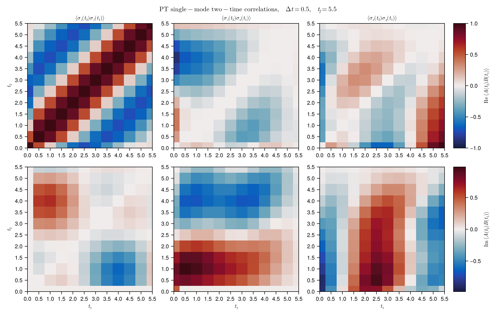

Multi-time correlations
Multi-time correlations are one of the places where the process-tensor viewpoint becomes more than a convenient reduced-dynamics tool.
In a Markovian calculation, it is tempting to imagine that every interval of time is described by an independent channel. In a non-Markovian environment, this is no longer true: an intervention at an earlier time can disturb the system, that disturbance can flow into the bath, and the bath can carry it back to the system later.
A process tensor stores this memory as a reusable PT-MPO. Once the process tensor is built, a multi-time correlation is obtained by changing the instruments inserted into its time legs.
In this example, we compute the full grid
\[C_{AB}(t_2,t_1) = \langle A(t_2) B(t_1) \rangle\]
for three pairs of spin operators:
\[\langle \sigma_z(t_2)\sigma_z(t_1)\rangle,\qquad \langle \sigma_z(t_2)\sigma_x(t_1)\rangle,\qquad \langle \sigma_x(t_2)\sigma_y(t_1)\rangle .\]
The heatmap below is produced by scripts/pt_multitime_correlations.jl and staged into the docs build. This page runs the same PT contractions and diagnostics without generating plots inline.
Setup
using Printf
using Statistics
using ITensors
using ProcessTensors
const STATUS_WIDTH = 92
function print_section(title::AbstractString)
println()
println(title)
println("-" ^ length(title))
end
function update_status(message::AbstractString)
print("\r", rpad(message, STATUS_WIDTH))
flush(stdout)
end
function finish_status(message::AbstractString = "")
print("\r", " "^STATUS_WIDTH, "\r")
if !isempty(message)
println(message)
end
flush(stdout)
end
const dt = 0.5
const tf = 5.5
const rho_label = "Dn"
const times = collect(0.0:dt:tf)
const n_times = length(times)
const pt_nsteps = n_times + 113Physical model
We use the same minimal spin-bath model as in the Spin-bath process tensor example:
\[H_S = S_x,\qquad H_E = S_x,\qquad H_{SE} = S_z \otimes S_z .\]
The system starts in |Dn⟩ and the bath spin starts in |Up⟩.
print_section("Problem setup")
println("Single-mode process tensor: full (t₁, t₂) grid of two-time correlators.")
println()
@printf("time step dt = %.4f\n", dt)
@printf("final time t_f = %.4f\n", tf)
@printf("time points = %d\n", n_times)
@printf("initial system state = %s\n", rho_label)
sys_phys = siteinds("S=1/2", 1)
env_phys = siteinds("S=1/2", 1)
env_liouv = liouv_sites(env_phys)
H_sys = OpSum()
H_sys += 1.0, "Sx", 1
system = spin_system(sys_phys, H_sys)
rho_env0_h = to_dm(MPS(env_phys, ["Up"]))
rho_env0_l = to_liouville(rho_env0_h; sites=env_liouv)
H_env = OpSum()
H_env += 1.0, "Sx", 1
coupling = OpSum()
coupling += 1.0, "Sz", 1, "Sz", 2
mode = spin_mode(env_liouv, H_env, rho_env0_l; coupling=coupling)
bath = spin_bath([mode])
rho_sys0_h = to_dm(MPS(sys_phys, [rho_label]))
O_Sz = OpSum()
O_Sz += 2.0, "Sz", 1
O_Sx = OpSum()
O_Sx += 2.0, "Sx", 1
O_Sy = OpSum()
O_Sy += 2.0, "Sy", 1
cases = [
("⟨σz(t₂)σz(t₁)⟩", O_Sz, O_Sz, "σz-σz"),
("⟨σz(t₂)σx(t₁)⟩", O_Sz, O_Sx, "σz-σx"),
("⟨σx(t₂)σy(t₁)⟩", O_Sx, O_Sy, "σx-σy"),
]3-element Vector{Tuple{String, ITensors.LazyApply.Sum{ITensors.LazyApply.Scaled{ComplexF64, ITensors.LazyApply.Prod{ITensors.Ops.Op}}}, ITensors.LazyApply.Sum{ITensors.LazyApply.Scaled{ComplexF64, ITensors.LazyApply.Prod{ITensors.Ops.Op}}}, String}}:
("⟨σz(t₂)σz(t₁)⟩", sum(
2.0 Sz(1,)
), sum(
2.0 Sz(1,)
), "σz-σz")
("⟨σz(t₂)σx(t₁)⟩", sum(
2.0 Sz(1,)
), sum(
2.0 Sx(1,)
), "σz-σx")
("⟨σx(t₂)σy(t₁)⟩", sum(
2.0 Sx(1,)
), sum(
2.0 Sy(1,)
), "σx-σy")Build the process tensor
The largest time index in the grid is n_times - 1. We build one extra slab so terminal trace-outs and late-time insertions are both well-defined.
The bath is integrated out here. All correlators below are different instrument contractions of this same PT-MPO.
print_section("Build process tensor")
pt_build_time = @elapsed begin
pt = build_process_tensor(
system,
system.sites[1];
environment=bath,
dt=dt,
nsteps=pt_nsteps,
)
end
println("Process tensor:")
println(pt)
@printf("process tensor steps = %d\n", pt_nsteps)
@printf("build time = %.3f s\n", pt_build_time)
@printf("PT max bond dim = %d\n", maxlinkdim(pt))
@assert pt isa ProcessTensor
@assert pt.nsteps == pt_nsteps
@assert pt.dt == dt
Build process tensor
--------------------
Process tensor:
13-step ProcessTensor{SpinSystem, SpinBath} | dt=0.5 | t_final=6.5 | maxlinkdim=4
system: SpinSystem(nsites=1, dissipative=false)
environment: SpinBath(nmodes=1, D_bath=4, coupling=true)
core: MPO{Liouville}(length=13, linkdims=[4, 4, 4, …, 4])
process tensor steps = 13
build time = 0.015 s
PT max bond dim = 4
Two-time instrument schedules
A two-time correlator is not computed by first producing a reduced trajectory and then multiplying numbers. The operator insertions are part of the process.
For t₂ > t₁, the two-time correlation of A and B is given as
\[\begin{aligned} \langle A(t_2) B(t_1) \rangle &= \operatorname{Tr}[U^{\dagger}(t_2) A\, U(t_2-t_1)\, B\, U(t_1)\, \rho(0)] \\ &= \operatorname{Tr}[U^{\dagger}(t_2-t_1) A\, U(t_2-t_1)\, B\, \rho(t_1)] \\ &= \operatorname{Tr}\left[A\, U(t_2-t_1)\, B\, \rho(t_1)\, U^{\dagger}(t_2-t_1)\right] \\ &= \operatorname{Tr}\left[A\, U(t_2-t_1)\, \rho_{B_L}(t_1)\, U^{\dagger}(t_2-t_1)\right] \\ &= \operatorname{Tr}\left[A\, \rho_{B_L}(t_2)\right]. \end{aligned}\]
In simple words, we evolve $\rho(0)$ forward to $t_1$, aply B from the left, evolve the resultant object to $t_2$, and measure the expectation of $A$. This can be implemented as the following instrument sequence:
t = 0 : StatePreparation(ρ₀)
t = t₁ : insert B from the left
t = t₂ : insert A
after t₂ : propagate with identity operations and TraceOutFor t₁ > t₂, the earlier operator and the later operator exchange roles. The implementation must also keep track of whether the early insertion acts from the left or from the right, so that the product ordering in ⟨A(t₂)B(t₁)⟩ is represented correctly.
On the diagonal t₂ = t₁, both operators are inserted at the same time. The same-time instrument represents the product at that single time leg.
The package helper two_time_correlation_seq builds this InstrumentSeq for us, considering all the above cases. Then evaluate_process contracts the process tensor with that sequence.
seq_demo = two_time_correlation_seq(
pt,
(O_Sz, 2),
(O_Sz, 1);
rho0=rho_sys0_h,
)
@show seq_demo
demo_value = evaluate_process(pt, seq_demo)
@printf("example Czz(t₂=%.2f, t₁=%.2f) = %.6f %+.6fi\n",
2dt, dt, real(demo_value), imag(demo_value))seq_demo = InstrumentSeq(default=IdentityOperation, nsteps=13, 13 explicit entries)
tstep=0 => StatePreparation{MPO{Hilbert, Nothing}}
tstep=2 => LeftRightOperator{MPO{Hilbert, Nothing}, MPO{Hilbert, Nothing}}
tstep=3 => LeftRightOperator{MPO{Hilbert, Nothing}, MPO{Hilbert, Nothing}}
tstep=4 => IdentityOperation
tstep=5 => IdentityOperation
tstep=6 => IdentityOperation
tstep=7 => IdentityOperation
tstep=8 => IdentityOperation
tstep=9 => IdentityOperation
tstep=10 => IdentityOperation
tstep=11 => IdentityOperation
tstep=12 => IdentityOperation
tstep=13 => TraceOut
example Czz(t₂=1.00, t₁=0.50) = 0.877583 -0.071086i
Correlation grid
We now evaluate every pair of time indices. The row index is t₁; the column index is t₂. Thus grid[n1 + 1, n2 + 1] stores C_AB(t₂=n2*dt, t₁=n1*dt).
function correlation_grid(
pt,
O_A::OpSum,
O_B::OpSum,
rho0;
times::AbstractVector,
case_label::AbstractString,
case_index::Int,
ncases::Int,
)
n_times = length(times)
dt_local = times[2] - times[1]
grid = Matrix{ComplexF64}(undef, n_times, n_times)
n_pairs = n_times * n_times
progress_stride = max(1, n_pairs ÷ 20)
pair = 0
elapsed = @elapsed begin
for n1 in 0:(n_times - 1)
for n2 in 0:(n_times - 1)
pair += 1
seq = two_time_correlation_seq(
pt,
(O_A, n2),
(O_B, n1);
rho0=rho0,
)
grid[n1 + 1, n2 + 1] = evaluate_process(pt, seq)
if pair == 1 || pair == n_pairs || pair % progress_stride == 0
update_status(
@sprintf(
" case %d/%d %-7s pair %4d/%4d t₁=%.2f t₂=%.2f",
case_index,
ncases,
case_label,
pair,
n_pairs,
n1 * dt_local,
n2 * dt_local,
),
)
end
end
finish_status(
@sprintf(
" case %d/%d %-7s finished row t₁ = %.2f (%d/%d)",
case_index,
ncases,
case_label,
n1 * dt_local,
n1 + 1,
n_times,
),
)
end
end
return (; grid, elapsed)
end
print_section("Main computation")
grids = Vector{Matrix{ComplexF64}}(undef, length(cases))
case_times = Vector{Float64}(undef, length(cases))
for (i, (_, O_A, O_B, label)) in enumerate(cases)
result = correlation_grid(
pt,
O_A,
O_B,
rho_sys0_h;
times=times,
case_label=label,
case_index=i,
ncases=length(cases),
)
grids[i] = result.grid
case_times[i] = result.elapsed
@printf("%-7s grid time: %.3f s\n", label, result.elapsed)
end
Main computation
----------------
case 1/3 σz-σz pair 1/ 144 t₁=0.00 t₂=0.00 case 1/3 σz-σz pair 7/ 144 t₁=0.00 t₂=3.00 case 1/3 σz-σz finished row t₁ = 0.00 (1/12)
case 1/3 σz-σz pair 14/ 144 t₁=0.50 t₂=0.50 case 1/3 σz-σz pair 21/ 144 t₁=0.50 t₂=4.00 case 1/3 σz-σz finished row t₁ = 0.50 (2/12)
case 1/3 σz-σz pair 28/ 144 t₁=1.00 t₂=1.50 case 1/3 σz-σz pair 35/ 144 t₁=1.00 t₂=5.00 case 1/3 σz-σz finished row t₁ = 1.00 (3/12)
case 1/3 σz-σz pair 42/ 144 t₁=1.50 t₂=2.50 case 1/3 σz-σz finished row t₁ = 1.50 (4/12)
case 1/3 σz-σz pair 49/ 144 t₁=2.00 t₂=0.00 case 1/3 σz-σz pair 56/ 144 t₁=2.00 t₂=3.50 case 1/3 σz-σz finished row t₁ = 2.00 (5/12)
case 1/3 σz-σz pair 63/ 144 t₁=2.50 t₂=1.00 case 1/3 σz-σz pair 70/ 144 t₁=2.50 t₂=4.50 case 1/3 σz-σz finished row t₁ = 2.50 (6/12)
case 1/3 σz-σz pair 77/ 144 t₁=3.00 t₂=2.00 case 1/3 σz-σz pair 84/ 144 t₁=3.00 t₂=5.50 case 1/3 σz-σz finished row t₁ = 3.00 (7/12)
case 1/3 σz-σz pair 91/ 144 t₁=3.50 t₂=3.00 case 1/3 σz-σz finished row t₁ = 3.50 (8/12)
case 1/3 σz-σz pair 98/ 144 t₁=4.00 t₂=0.50 case 1/3 σz-σz pair 105/ 144 t₁=4.00 t₂=4.00 case 1/3 σz-σz finished row t₁ = 4.00 (9/12)
case 1/3 σz-σz pair 112/ 144 t₁=4.50 t₂=1.50 case 1/3 σz-σz pair 119/ 144 t₁=4.50 t₂=5.00 case 1/3 σz-σz finished row t₁ = 4.50 (10/12)
case 1/3 σz-σz pair 126/ 144 t₁=5.00 t₂=2.50 case 1/3 σz-σz finished row t₁ = 5.00 (11/12)
case 1/3 σz-σz pair 133/ 144 t₁=5.50 t₂=0.00 case 1/3 σz-σz pair 140/ 144 t₁=5.50 t₂=3.50 case 1/3 σz-σz pair 144/ 144 t₁=5.50 t₂=5.50 case 1/3 σz-σz finished row t₁ = 5.50 (12/12)
σz-σz grid time: 0.760 s
case 2/3 σz-σx pair 1/ 144 t₁=0.00 t₂=0.00 case 2/3 σz-σx pair 7/ 144 t₁=0.00 t₂=3.00 case 2/3 σz-σx finished row t₁ = 0.00 (1/12)
case 2/3 σz-σx pair 14/ 144 t₁=0.50 t₂=0.50 case 2/3 σz-σx pair 21/ 144 t₁=0.50 t₂=4.00 case 2/3 σz-σx finished row t₁ = 0.50 (2/12)
case 2/3 σz-σx pair 28/ 144 t₁=1.00 t₂=1.50 case 2/3 σz-σx pair 35/ 144 t₁=1.00 t₂=5.00 case 2/3 σz-σx finished row t₁ = 1.00 (3/12)
case 2/3 σz-σx pair 42/ 144 t₁=1.50 t₂=2.50 case 2/3 σz-σx finished row t₁ = 1.50 (4/12)
case 2/3 σz-σx pair 49/ 144 t₁=2.00 t₂=0.00 case 2/3 σz-σx pair 56/ 144 t₁=2.00 t₂=3.50 case 2/3 σz-σx finished row t₁ = 2.00 (5/12)
case 2/3 σz-σx pair 63/ 144 t₁=2.50 t₂=1.00 case 2/3 σz-σx pair 70/ 144 t₁=2.50 t₂=4.50 case 2/3 σz-σx finished row t₁ = 2.50 (6/12)
case 2/3 σz-σx pair 77/ 144 t₁=3.00 t₂=2.00 case 2/3 σz-σx pair 84/ 144 t₁=3.00 t₂=5.50 case 2/3 σz-σx finished row t₁ = 3.00 (7/12)
case 2/3 σz-σx pair 91/ 144 t₁=3.50 t₂=3.00 case 2/3 σz-σx finished row t₁ = 3.50 (8/12)
case 2/3 σz-σx pair 98/ 144 t₁=4.00 t₂=0.50 case 2/3 σz-σx pair 105/ 144 t₁=4.00 t₂=4.00 case 2/3 σz-σx finished row t₁ = 4.00 (9/12)
case 2/3 σz-σx pair 112/ 144 t₁=4.50 t₂=1.50 case 2/3 σz-σx pair 119/ 144 t₁=4.50 t₂=5.00 case 2/3 σz-σx finished row t₁ = 4.50 (10/12)
case 2/3 σz-σx pair 126/ 144 t₁=5.00 t₂=2.50 case 2/3 σz-σx finished row t₁ = 5.00 (11/12)
case 2/3 σz-σx pair 133/ 144 t₁=5.50 t₂=0.00 case 2/3 σz-σx pair 140/ 144 t₁=5.50 t₂=3.50 case 2/3 σz-σx pair 144/ 144 t₁=5.50 t₂=5.50 case 2/3 σz-σx finished row t₁ = 5.50 (12/12)
σz-σx grid time: 0.158 s
case 3/3 σx-σy pair 1/ 144 t₁=0.00 t₂=0.00 case 3/3 σx-σy pair 7/ 144 t₁=0.00 t₂=3.00 case 3/3 σx-σy finished row t₁ = 0.00 (1/12)
case 3/3 σx-σy pair 14/ 144 t₁=0.50 t₂=0.50 case 3/3 σx-σy pair 21/ 144 t₁=0.50 t₂=4.00 case 3/3 σx-σy finished row t₁ = 0.50 (2/12)
case 3/3 σx-σy pair 28/ 144 t₁=1.00 t₂=1.50 case 3/3 σx-σy pair 35/ 144 t₁=1.00 t₂=5.00 case 3/3 σx-σy finished row t₁ = 1.00 (3/12)
case 3/3 σx-σy pair 42/ 144 t₁=1.50 t₂=2.50 case 3/3 σx-σy finished row t₁ = 1.50 (4/12)
case 3/3 σx-σy pair 49/ 144 t₁=2.00 t₂=0.00 case 3/3 σx-σy pair 56/ 144 t₁=2.00 t₂=3.50 case 3/3 σx-σy finished row t₁ = 2.00 (5/12)
case 3/3 σx-σy pair 63/ 144 t₁=2.50 t₂=1.00 case 3/3 σx-σy pair 70/ 144 t₁=2.50 t₂=4.50 case 3/3 σx-σy finished row t₁ = 2.50 (6/12)
case 3/3 σx-σy pair 77/ 144 t₁=3.00 t₂=2.00 case 3/3 σx-σy pair 84/ 144 t₁=3.00 t₂=5.50 case 3/3 σx-σy finished row t₁ = 3.00 (7/12)
case 3/3 σx-σy pair 91/ 144 t₁=3.50 t₂=3.00 case 3/3 σx-σy finished row t₁ = 3.50 (8/12)
case 3/3 σx-σy pair 98/ 144 t₁=4.00 t₂=0.50 case 3/3 σx-σy pair 105/ 144 t₁=4.00 t₂=4.00 case 3/3 σx-σy finished row t₁ = 4.00 (9/12)
case 3/3 σx-σy pair 112/ 144 t₁=4.50 t₂=1.50 case 3/3 σx-σy pair 119/ 144 t₁=4.50 t₂=5.00 case 3/3 σx-σy finished row t₁ = 4.50 (10/12)
case 3/3 σx-σy pair 126/ 144 t₁=5.00 t₂=2.50 case 3/3 σx-σy finished row t₁ = 5.00 (11/12)
case 3/3 σx-σy pair 133/ 144 t₁=5.50 t₂=0.00 case 3/3 σx-σy pair 140/ 144 t₁=5.50 t₂=3.50 case 3/3 σx-σy pair 144/ 144 t₁=5.50 t₂=5.50 case 3/3 σx-σy finished row t₁ = 5.50 (12/12)
σx-σy grid time: 0.869 s
Diagnostics
The first panel is an autocorrelation:
\[C_{zz}(t_2,t_1) = \langle \sigma_z(t_2)\sigma_z(t_1)\rangle .\]
Since σz is Hermitian and σz² = I, the diagonal is a sanity check:
\[C_{zz}(t,t) = 1 .\]
Therefore the real diagonal should be close to one, and the imaginary diagonal should be close to zero. Off the diagonal, the autocorrelation satisfies the conjugate structure
\[C_{zz}(t_2,t_1)^* = C_{zz}(t_1,t_2),\]
so the real part is symmetric while the imaginary part is antisymmetric.
For cross-correlations, the structure is different. For example,
\[\sigma_z\sigma_x = i\sigma_y,\qquad \sigma_x\sigma_y = i\sigma_z .\]
Thus the equal-time diagonal of ⟨σz(t₂)σx(t₁)⟩ is expected to be mainly imaginary and related to ⟨σy(t)⟩, while the equal-time diagonal of ⟨σx(t₂)σy(t₁)⟩ is related to ⟨σz(t)⟩. Away from the diagonal, there is no reason for a single cross-correlation grid to be symmetric; the conjugate partner involves the reversed operator ordering.
print_section("Diagnostics")
all_values = vcat(grids...)
finite_fraction = mean(isfinite.(real.(all_values)))
Czz = grids[1]
diag_Czz = diag(Czz)
diag_real_error = maximum(abs.(real.(diag_Czz) .- 1.0); init=0.0)
diag_imag_error = maximum(abs.(imag.(diag_Czz)); init=0.0)
conjugate_defect = maximum(abs.(Czz - Czz'); init=0.0)
@printf("finite correlator fraction = %.3f\n", finite_fraction)
@printf("max |Re correlator| = %.6f\n", maximum(abs.(real.(all_values)); init=0.0))
@printf("max |Im correlator| = %.6f\n", maximum(abs.(imag.(all_values)); init=0.0))
@printf("Czz diagonal Re error = %.3e\n", diag_real_error)
@printf("Czz diagonal Im magnitude = %.3e\n", diag_imag_error)
@printf("Czz conjugate defect = %.3e\n", conjugate_defect)
@assert finite_fraction > 0.99 "Too many non-finite correlator values."
@assert all(isfinite, case_times)
Diagnostics
-----------
finite correlator fraction = 1.000
max |Re correlator| = 1.000000
max |Im correlator| = 0.981620
Czz diagonal Re error = 0.000e+00
Czz diagonal Im magnitude = 9.316e-18
Czz conjugate defect = 1.395e-15

- The process tensor is built once; each grid entry is a different
two_time_correlation_seqcontraction of the same PT-MPO. - The
⟨σz(t₂)σz(t₁)⟩autocorrelation panel checks physicality through its diagonal (Re ≈ 1) and conjugate symmetry. - Cross-correlation grids are naturally complex because the inserted spin operators do not commute; imaginary parts encode ordering and bath memory.
- Regenerate the figure with
julia --project=. scripts/pt_multitime_correlations.jl.